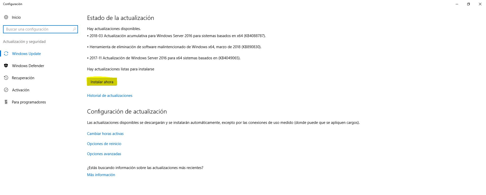
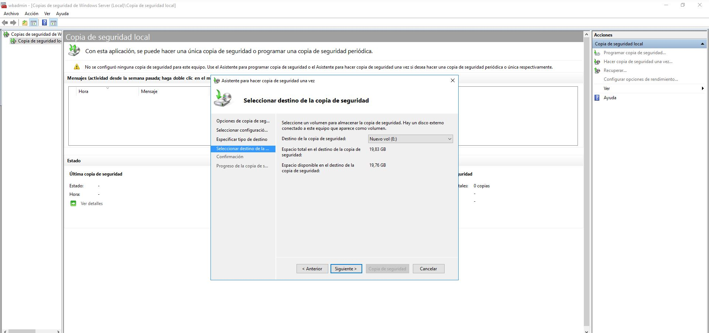
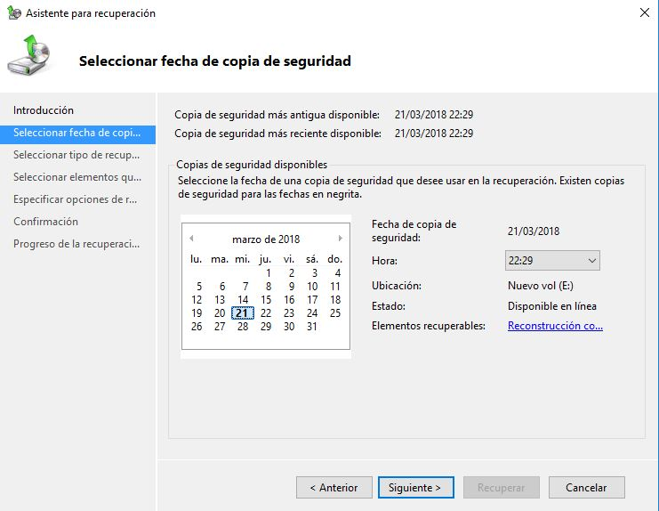
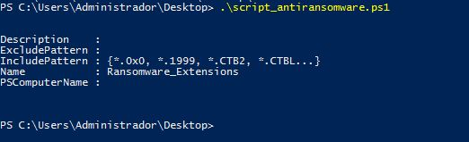
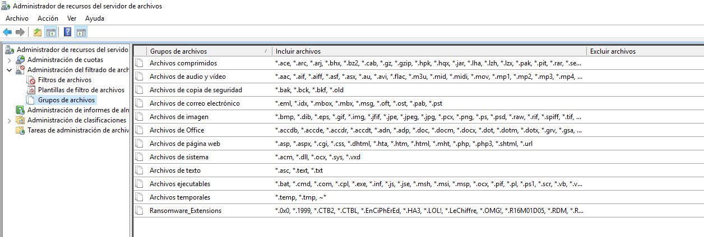
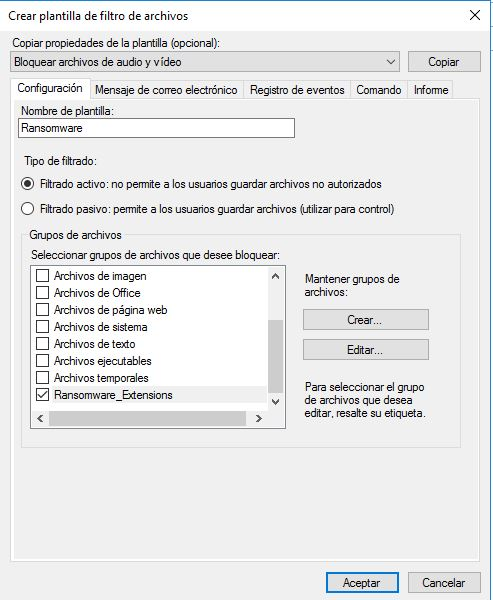
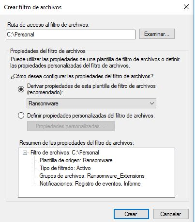

Se han tenido en cuenta los requerimientos de seguridad
Como hemos dicho en secciones anteriores, existen varios métodos de seguridad, actualizar servidor, copias de seguridad, entre otros.
Actualizar servidor
Para actualizar el dominio, nos dirigimos a Windows Update e instalamos las nuevas actualizaciones disponible
Copias de seguridad
PASOS PREVIOS
Deberemos de tener instalado el rol de las copias de seguridad en el dominio, para ello nos dirigimos a añadir roles e instalamos esa característica.
Para realizar las copias de seguridad nos dirigiremos a Administrador del servidor > Herramientas y clickeamos en Copias de seguridad de Windows Server, le hacemos click en Hacer una copia de seguridad una vez..., se nos abrirá una ventana nueva y elegimos el checkbox de Opciones diferentes y le damos a siguiente, tenemos dos opciones, de hacer una copia al servidor entero o personalizada, se recomienda completa. En este caso hemos marcado completa, le damos a siguiente y elegimos si lo queremos en Unidades locales o en carpeta compartida remota, en este caso hemos seleccionado la unidad local E.
Aceptamos y realizamos la copia de seguridad (tarda varios minutos, eso dependerá de los recursos de tu maquina), una vez ya creado le damos a Cerrar, para cargar una copia de seguridad le hacemos click en Recuperar, nos preguntará si se encuentra en el servidor o en otro almacenamiento, este caso lo tenemos en el servidor. Automáticamente nos buscará la última copia de seguridad realizada.
Seleccionamos archivos y carpetas, le damos a siguiente, seleccionamos elementos, ubicación y comenzamos la copia de seguridad.
Evitar ransomware
PASOS PREVIOS
Tenemos que añadir la función Administrador de recursos del servidor de archivos.
Le pasaremos un script en el cual se añadirán nuevas extensiones en las cuales bloquearemos ya que son muy usadas por los ransomware, haz click aquí para obtener el código del script. Una vez que lo tengamos lo ejecutamos con PowerShell.
Nos dirigimos a Administrador del servidor y a Administrador de recursos del servidor de archivos, desplegamos Adminitración del filtrado de archivos y seleccionamos Grupos de archivos y abajo del todo aparecerá el grupo que hemos creado.
Creamos una plantilla de filtro de archivos, para crearlo le hacemos click derecho y en crear nueva plantilla, le asignamos un nombre y seleccionamos un grupo de archivos que el cual seleccionaremos es el que hemos creado nuevo "ransomware_extensions", una vez dado nos vamos a la sección de mensaje de correo electrónico, aquí podemos habilitar de que nos envíen un mensaje a nuestro correo cuando un usuario ha utilizado un archivo no autorizado, también podemos crear una advertencia en el registro y que se genere un comando al ver que se está haciendo uso de un ransomware e incluso hacer un informe de todo, la recomendación que doy es habilitar todas estas funciones.
Nos dirigimos a Filtros de archivos, creamos un filtro nuevo y elegimos una carpeta en el cual lo aplicaremos y marcamos el primer checkbox y en el menú desplegable marcamos "ransomware" y creamos.
Con todo esto podemos evitar un ataque RANSOMWARE